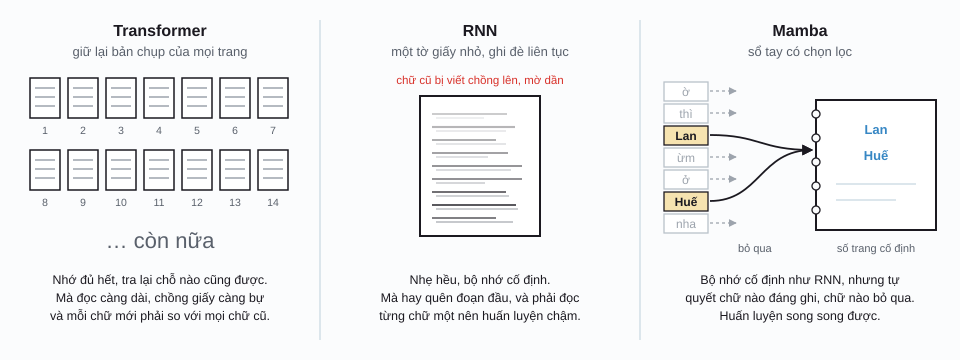
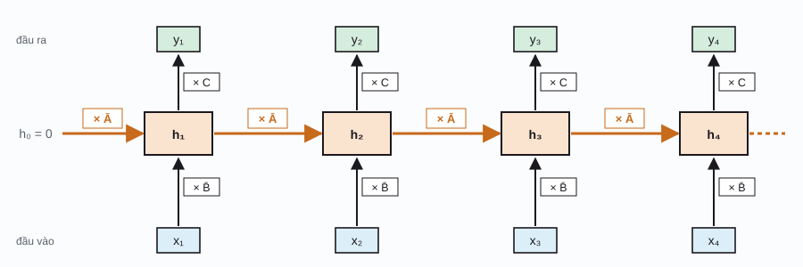
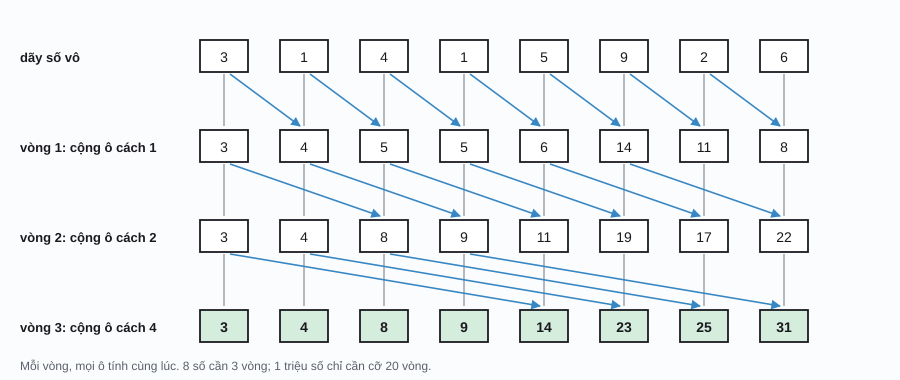
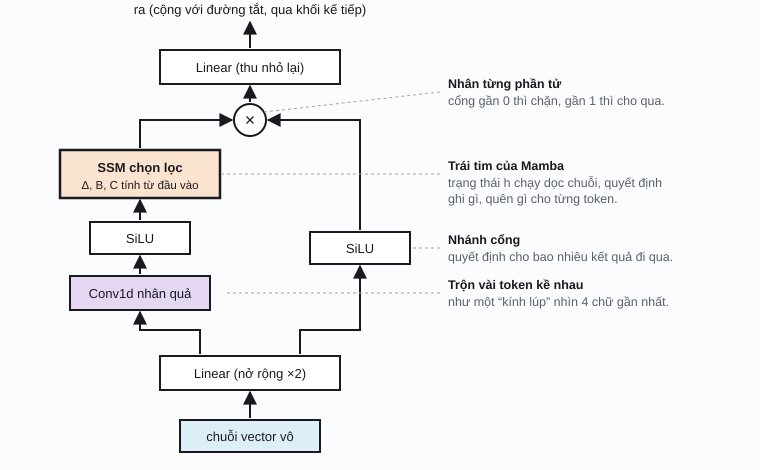

AI / Phần 6
Mamba
Transformer giỏi thiệt, nhưng đọc càng dài thì càng mắc: tốn bộ nhớ, tốn thời gian. Mamba (2023) là một kiến trúc khác hẳn, đọc chuỗi theo kiểu ghi sổ tay: chỉ giữ một cuốn sổ cỡ cố định, và tự quyết định chữ nào đáng ghi, chữ nào bỏ qua. Trang này kể chuyện Mamba từ đầu, hổng cần biết trước gì nhiều ngoài Phần 1 và ý chính của Phần 2.
Chuyện đọc một cuốn truyện dài
Tưởng tượng bạn đọc một cuốn tiểu thuyết 500 trang và phải trả lời câu hỏi về nó. Có mấy cách nhớ:
- Kiểu Transformer: chụp lại mọi trang đã đọc. Gặp chữ mới thì lật lại so với từng chữ cũ (cơ chế attention ở Phần 2). Nhớ đủ hết, tra chính xác. Nhưng chồng giấy càng lúc càng bự, và chữ thứ n phải so với n chữ trước, nên tổng công so sánh tăng theo \(n^2\).
- Kiểu RNN (mạng hồi quy, thời trước Transformer): chỉ giữ một tờ giấy nhỏ, đọc chữ nào ghi đè lên tờ đó. Gọn nhẹ, bộ nhớ cố định. Nhưng ghi đè hoài thì đoạn đầu mờ hết, và vì phải đọc từng chữ một theo thứ tự nên huấn luyện chậm rì trên GPU.
- Kiểu Mamba: cũng giữ một cuốn sổ cỡ cố định như RNN, nhưng khôn hơn: thấy chữ quan trọng thì ghi đậm, gặp chữ đệm như “ờ”, “thì”, “nha” thì lướt qua. Và nhờ một mẹo toán, vẫn huấn luyện song song được như Transformer.

Cụ thể hơn: khi sinh chữ, Transformer phải giữ KV cache (key và value của mọi token cũ, coi lại ở Phần 5). Cái cache này lớn dần theo độ dài ngữ cảnh. Kéo thanh trượt dưới đây để coi nó bự cỡ nào.
Ngữ cảnh càng dài, tốn càng nhiều?
Kéo độ dài ngữ cảnh, so bộ nhớ của Transformer với MambaMô hình không gian trạng thái
Mamba thuộc họ mô hình không gian trạng thái (state space model, SSM). Cái tên nghe ghê nhưng ý tưởng rất đời thường, và đã được dân điều khiển tự động xài từ những năm 1960 (bộ lọc Kalman trong tàu Apollo là một ví dụ). Có một trạng thái \(h\), là một vector, đóng vai cuốn sổ. Mỗi bước thời gian, nhận một đầu vào \(x_t\) (một token), rồi:
- Cập nhật sổ: giữ lại một phần sổ cũ, cộng thêm một phần thông tin mới.
- Đọc sổ ra: từ sổ, tính đầu ra \(y_t\).
ht: trạng thái (cuốn sổ) sau khi đọc token thứ t; Ā (A gạch): giữ lại bao nhiêu sổ cũ, như hệ số “nhớ dai”; B̄: ghi thông tin mới vô sổ mạnh cỡ nào; C: cách đọc sổ ra thành đầu ra; xt, yt: đầu vào và đầu ra ở bước t. Trong Mamba, Ā là ma trận đường chéo, nên mỗi ô của cuốn sổ có “độ nhớ dai” riêng.

Minh họa dưới rút gọn tới mức đơn giản nhất: trạng thái chỉ có một con số, và ghi vô đúng phần đã rỉ mất \((\bar B = 1 - \bar A)\). Bạn sẽ thấy ngay cái khó: một độ nhớ cố định thì hổng vừa nhớ dai vừa phản ứng lẹ được.
Trạng thái nhớ rồi quên
Chỉnh độ nhớ ā, bấm để thêm sự kiệnBước thời gian Δ
Thiệt ra SSM gốc được viết cho thời gian liên tục (như tín hiệu âm thanh): \(h'(t) = A\,h(t) + B\,x(t)\). Muốn xài cho chuỗi token rời rạc, người ta “chia nhỏ thời gian” với một bước \(\Delta\) (delta), gọi là rời rạc hóa (discretization):
A: số âm (hoặc ma trận đường chéo toàn số âm), nên \(e^{\Delta A}\) nằm giữa 0 và 1; e: hằng số Euler ≈ 2,718; Δ: bước thời gian, luôn dương. Δ nhỏ xíu: Ā gần 1, B̄ gần 0, nghĩa là giữ nguyên sổ và gần như hổng ghi gì, coi như lướt qua token này. Δ lớn: Ā gần 0, B̄ lớn, nghĩa là xóa bớt sổ cũ và ghi đậm token này.
Hãy nhớ kỹ ý nghĩa của Δ, vì nó là chìa khóa của Mamba ở phần sau: Δ chính là “mức độ để tâm” tới token hiện tại.
Hai cách tính cùng một kết quả
Công thức ở trên là kiểu chạy từng bước, giống RNN: muốn có \(h_{100}\) phải có \(h_{99}\) trước. Rất hợp lúc sinh chữ (mỗi lần chỉ thêm một token, chi phí cố định), nhưng chậm lúc huấn luyện.
Có một mẹo: nếu Ā, B̄, C giống nhau ở mọi bước, cứ trải công thức ra thì thấy đầu ra là tổng có trọng số của mọi đầu vào cũ:
Dãy hệ số \((C\bar B,\; C\bar A\bar B,\; C\bar A^2\bar B,\; \dots)\) là một bộ lọc dài cố định. Đầu ra chính là tích chập của chuỗi đầu vào với bộ lọc này, y chang phép trượt-nhân-cộng ở Phần 1, chỉ là một chiều và dài hơn nhiều.
Tích chập thì tính song song được hết trên GPU. Đây là ý tưởng của S4 (Gu, Goel và Ré, 2021): huấn luyện bằng tích chập cho lẹ, chạy bằng kiểu từng bước cho gọn. S4 là mô hình đầu tiên giải được bài Path-X trong bộ kiểm tra Long Range Arena (chuỗi dài 16 ngàn phần tử), nơi Transformer chỉ đoán hên xui.
Nhưng S4 có một cái tật: Ā, B̄, C cố định, nên nó xử mọi token y như nhau, dù là “ờ” hay “Lan”. Mấy mô hình như vậy gọi là bất biến theo thời gian (linear time-invariant, LTI). Với âm thanh hay tín hiệu đều đặn thì ổn; với ngôn ngữ, nơi mỗi chữ quan trọng một kiểu, thì S4 thua Transformer xa.
Mamba: SSM biết chọn lọc
Ý tưởng của Albert Gu và Tri Dao (2023) nghe đơn giản tới bất ngờ: cho Δ, B và C phụ thuộc vào chính token đang đọc. Mỗi token đi qua vài lớp tuyến tính nhỏ để tự sinh ra Δ, B, C của riêng nó. Token quan trọng tự cho mình Δ lớn để được ghi đậm; token vô nghĩa tự cho Δ gần 0 để bị lướt qua. Đó là cơ chế chọn lọc (selection mechanism), chữ “S” trong tên gọi selective SSM.
WΔ, WB, WC: ma trận trọng số học được (học bằng backprop như mọi trọng số khác, coi Phần 1); softplus: hàm trơn biến mọi số thành số dương, \(\log(1 + e^z)\), vì bước thời gian phải dương; chỉ số t nhắc rằng mấy giá trị này giờ đổi theo từng token.
Nhớ có chọn lọc
So SSM cố định với SSM chọn lọc trên cùng một câuNhững điều có thể kiểm tra trên minh họa:
- Ở chế độ cố định, cuốn sổ toàn nhớ mấy chữ cuối câu, mà chữ cuối lại là “đó ha”. Chỉnh Δ nhỏ thì sổ nhớ dài hơn nhưng nhòe đều, chữ nào cũng mờ như nhau.
- Ở chế độ chọn lọc, “Huế”, “7”, “Lan” chiếm phần lớn cuốn sổ, còn “ờ”, “ừm”, “nha” gần như hổng để lại dấu vết.
- Kéo thanh “Đọc tới token thứ” lùi lại từng bước: mỗi lần gặp tên riêng, phần của các chữ trước bị giảm hẳn (vì Δ lớn cũng làm Ā nhỏ, tức là dọn chỗ). Mamba thật có hàng ngàn kênh, mỗi kênh tự học kiểu dọn chỗ riêng, nên hổng phải chữ quan trọng nào cũng đè chữ quan trọng khác.

Quét song song và mẹo phần cứng
Cho Δ, B, C đổi theo token thì có cái giá: mẹo tích chập của S4 hết xài được, vì bộ lọc giờ đổi ở mỗi bước. Chẳng lẽ quay về chạy từng bước chậm rì như RNN?
Hổng cần. Phép cập nhật \(h_t = \bar A_t h_{t-1} + \bar B_t x_t\) có một tính chất đẹp: ghép hai bước liền nhau lại vẫn ra một phép cùng dạng “nhân rồi cộng”. Mà phép nào ghép được kiểu đó (gọi là có tính kết hợp (associative)) thì tính được bằng quét song song (parallel scan), giống như tính tổng dồn của một dãy số:

Mẹo thứ hai mới là chỗ Tri Dao (tác giả FlashAttention) ra tay. GPU có hai loại bộ nhớ: HBM bự nhưng chậm, và SRAM nhỏ xíu nhưng nhanh hơn cả chục lần. Trạng thái của Mamba, khi nở ra cho mọi token, rất bự. Thay vì ghi nó ra HBM, Mamba gom hết các bước (rời rạc hóa, quét, đọc ra) vô một lần chạy duy nhất ngay trong SRAM, chỉ ghi kết quả cuối ra ngoài. Khi lan ngược để học, nó tính lại trạng thái thay vì lưu sẵn. Nhờ vậy, Mamba vừa chọn lọc được vừa chạy lẹ.
Khối Mamba
Một mô hình Mamba là nhiều khối Mamba chồng lên nhau, mỗi khối có chuẩn hóa và kết nối tắt (giống ResNet và Transformer). Khác với Transformer có hai phần (attention rồi MLP), khối Mamba gộp hết làm một:

| Tiêu chí | Transformer | RNN / LSTM | Mamba |
|---|---|---|---|
| Bộ nhớ khi sinh chữ | Tăng theo độ dài (KV cache) | Cố định | Cố định |
| Công sinh mỗi token mới | Tăng theo độ dài | Cố định | Cố định |
| Tổng công huấn luyện theo độ dài n | \(O(n^2)\) | \(O(n)\), nhưng phải chạy tuần tự | \(O(n)\), chạy song song được |
| Chọn lọc theo nội dung | Có (attention) | Có, qua cổng (LSTM) | Có (Δ, B, C theo token) |
| Tra lại chính xác một chi tiết xa | Rất giỏi | Yếu | Khá, nhưng thua Transformer |
| Hợp nhất với | Ngữ cảnh vừa phải, cần tra cứu chính xác | Thiết bị nhỏ, chuỗi ngắn | Chuỗi rất dài: tài liệu, âm thanh, DNA |
Mamba-2, Mamba-3 và mô hình lai
Mamba-2: Transformer và SSM là bà con
Năm 2024, Dao và Gu chứng minh rằng SSM chọn lọc (với Ā là một số nhân với ma trận đơn vị) và một dạng attention có mặt nạ thật ra là hai cách viết của cùng một phép tính, gọi là đối ngẫu không gian trạng thái (structured state space duality, SSD). Hệ quả thực tế: Mamba-2 tính được bằng phép nhân ma trận, thứ mà GPU làm nhanh nhất, nên lõi của nó nhanh hơn Mamba gốc 2 tới 8 lần và cho phép cuốn sổ lớn hơn nhiều.
Mamba-3 (2026)
Đầu năm 2026, nhóm tác giả công bố Mamba-3, tiếp tục cải tiến dựa trên các nguyên lý của SSM, với mục tiêu đặt khâu chạy mô hình (inference) lên hàng đầu: làm sao sinh chữ lẹ và tận dụng phần cứng tốt hơn, chứ hổng chỉ huấn luyện lẹ.
Điểm yếu: cuốn sổ có giới hạn
Sổ cỡ cố định thì hổng thể chép lại nguyên văn một đoạn văn dài, hay tra đúng số điện thoại của một người trong cuốn danh bạ ngàn trang. Nghiên cứu “Repeat After Me” (Jelassi và cộng sự, 2024) cho thấy ở những bài kiểu sao chép và tra cứu chính xác, Transformer học nhanh hơn và làm tốt hơn hẳn SSM. Cái này gọi chung là khả năng truy hồi (recall).
Mô hình lai: lấy cái hay của cả hai
Giải pháp đang thắng thế là trộn: phần lớn các lớp là Mamba (rẻ, xử lý chuỗi dài), xen vô vài lớp attention (để tra cứu chính xác). Một số ví dụ:
- Jamba (AI21 Labs, 2024): cứ 8 lớp thì 1 lớp attention, 7 lớp Mamba, kèm mixture-of-experts, ngữ cảnh 256 ngàn token.
- Nemotron-H (NVIDIA, 2025): thay hầu hết lớp attention bằng lớp Mamba-2.
- Granite 4.0 (IBM, 2025): kiến trúc lai Mamba-2 và Transformer, nhắm tới chạy rẻ trong doanh nghiệp.
- Mô hình “thuần” Mamba cũng có: Codestral Mamba (Mistral, 2024, cho lập trình) và Falcon Mamba 7B (TII, 2024).
Mamba còn được đem qua thị giác máy tính (Vision Mamba, VMamba, 2024) và có nhiều “bà con” cùng ý tưởng hồi quy tuyến tính như RWKV, RetNet, Griffin hay DeltaNet. Chuyện Transformer hay Mamba sẽ thắng chưa ngã ngũ; xu hướng tới 2026 là kết hợp cả hai.
Từ điển nhỏ
| Thuật ngữ | Tiếng Anh | Nói đơn giản |
|---|---|---|
| Mô hình không gian trạng thái | state space model (SSM) | Mô hình giữ một trạng thái (cuốn sổ), cập nhật qua từng bước. |
| Trạng thái | state, hidden state | Vector cỡ cố định tóm tắt mọi thứ đã đọc. |
| Rời rạc hóa | discretization | Biến công thức thời gian liên tục thành công thức từng bước, dựa vào bước Δ. |
| Cơ chế chọn lọc | selection mechanism | Cho Δ, B, C tùy theo token, để mô hình tự chọn ghi gì, bỏ gì. |
| Bất biến theo thời gian | linear time-invariant (LTI) | Tham số giống nhau ở mọi bước, như S4. |
| Quét song song | parallel scan | Tính chuỗi phép cộng dồn (hay ghép bước) trong cỡ log n vòng song song. |
| KV cache | key-value cache | Bộ nhớ của Transformer chứa key, value của mọi token cũ; lớn dần theo độ dài. |
| Truy hồi | recall | Khả năng tra lại chính xác một chi tiết đã đọc từ xa. |
| Mô hình lai | hybrid model | Trộn lớp Mamba với lớp attention trong cùng một mô hình. |
Phụ lục: ký hiệu toán học
Ký hiệu toán học trên trang này. Cột giữa là cách đọc trong tài liệu tiếng Anh.
| Ký hiệu | Đọc (tiếng Anh) | Ý nghĩa, nói đơn giản |
|---|---|---|
| \(h_t\) | h sub t | Trạng thái sau khi đọc token thứ t. |
| \(\bar A,\ \bar B\) | A bar, B bar | Phiên bản từng bước (đã rời rạc hóa) của A và B. |
| \(\Delta\) | delta | Bước thời gian; trong Mamba là “mức để tâm” tới token hiện tại. |
| \(h'(t)\) | h prime of t | Đạo hàm theo thời gian: h đang thay đổi nhanh cỡ nào. |
| \(e^{z}\) | e to the z | Hàm mũ; với z âm, kết quả nằm giữa 0 và 1. |
| \(\mathrm{softplus}\) | softplus | \(\log(1+e^z)\): luôn dương, gần giống ReLU nhưng trơn. |
| \(O(n^2)\) | big O of n squared | Chi phí tăng cỡ bình phương độ dài n. |
Lịch sử
- 1960
Bộ lọc Kalman
Rudolf Kálmán đưa ra cách ước lượng trạng thái ẩn của một hệ từ các đo đạc nhiễu, dựa trên mô hình không gian trạng thái. Được xài trong dẫn đường tàu Apollo, GPS, robot.
- 1997
LSTM
Hochreiter và Schmidhuber thêm “cổng” vào RNN để mạng tự quyết nhớ gì, quên gì, cha đẻ tinh thần của cơ chế chọn lọc.
- 2020
HiPPO và linear attention
Gu và cộng sự tìm ra cách chọn ma trận A để trạng thái nén lịch sử tốt nhất. Cùng năm, Katharopoulos và cộng sự cho thấy một dạng attention tuyến tính viết lại được như RNN.
- 2021
S4
Gu, Goel và Ré làm SSM chạy được hiệu quả trên GPU nhờ mẹo tích chập, giải được bài Path-X với chuỗi 16 ngàn phần tử.
- 12/2023
Mamba
Albert Gu (Carnegie Mellon) và Tri Dao (Princeton) thêm cơ chế chọn lọc và thuật toán quét tối ưu cho phần cứng. Lần đầu một mô hình hổng có attention theo kịp Transformer ở mô hình ngôn ngữ.
- 2024
Mamba-2 và mô hình lai
Dao và Gu công bố SSD và Mamba-2. AI21 ra Jamba; Mistral ra Codestral Mamba; TII ra Falcon Mamba 7B; Mamba được đem qua xử lý ảnh (Vision Mamba).
- 2025
Lai vào sản phẩm
NVIDIA (Nemotron-H) và IBM (Granite 4.0) đưa kiến trúc lai Mamba-2 và Transformer vào các dòng mô hình chính.
- 2026
Mamba-3
Nhóm tác giả công bố Mamba-3, tập trung vào hiệu quả khi chạy mô hình.
Tài liệu tham khảo
- A. Gu, T. Dao, “Mamba: Linear-Time Sequence Modeling with Selective State Spaces”, COLM 2024. arXiv:2312.00752. Mã nguồn: github.com/state-spaces/mamba.
- T. Dao, A. Gu, “Transformers are SSMs: Generalized Models and Efficient Algorithms Through Structured State Space Duality”, ICML 2024. arXiv:2405.21060.
- A. Lahoti et al., “Mamba-3: Improved Sequence Modeling using State Space Principles”, 2026. arXiv:2603.15569.
- A. Gu, K. Goel, C. Ré, “Efficiently Modeling Long Sequences with Structured State Spaces”, ICLR 2022. arXiv:2111.00396.
- O. Lieber et al., “Jamba: A Hybrid Transformer-Mamba Language Model”, 2024. arXiv:2403.19887.
- S. Jelassi, D. Brandfonbrener, S. M. Kakade, E. Malach, “Repeat After Me: Transformers are Better than State Space Models at Copying”, ICML 2024. arXiv:2402.01032.
- L. Zhu et al., “Vision Mamba: Efficient Visual Representation Learning with Bidirectional State Space Model”, ICML 2024. arXiv:2401.09417.
- W. D. Hillis, G. L. Steele Jr., “Data Parallel Algorithms”, Communications of the ACM 29(12), 1986.